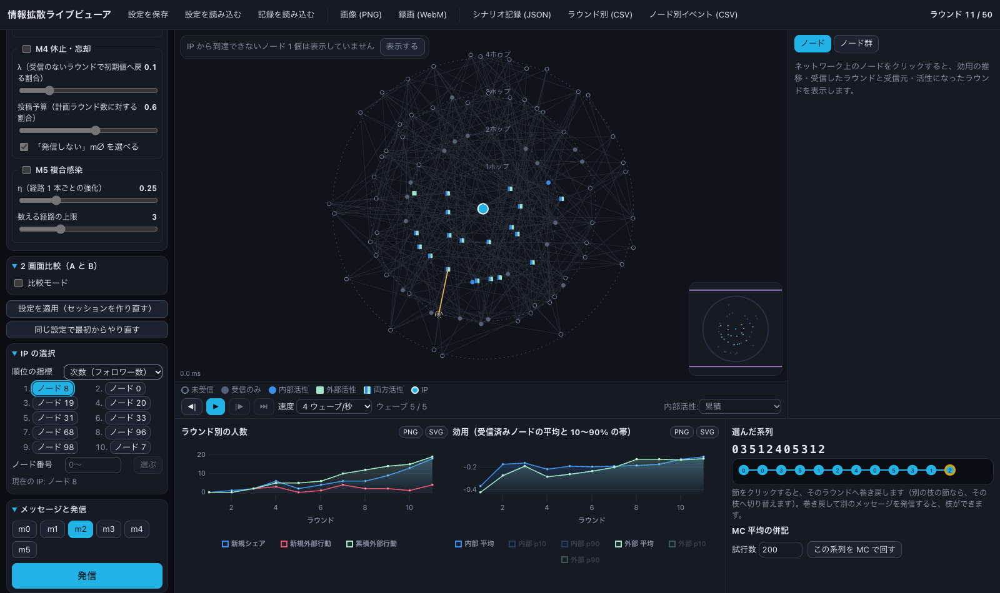
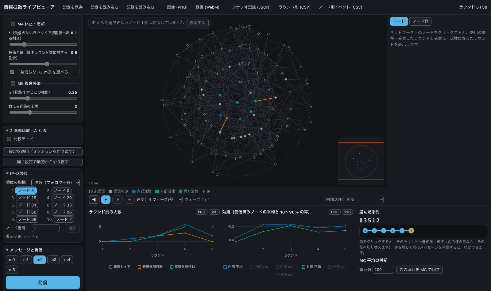
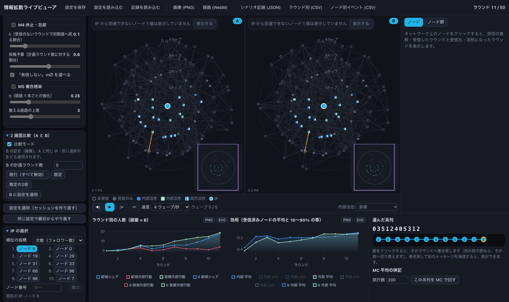

参照: Dribbble「Policy Network Dashboard UI Design」（Lina Ghimp）。紺寄りの暗い地、一段明るいパネル、くすんだ多色のノード、シアンのアクセント、面グラフの塗り。
配置・寸法・文言・操作は変えず、彩色だけを参照に寄せる。データの色は色覚の違いでも区別できる値に調整する。



| 役割 | 色 | 役割 | 色 |
|---|---|---|---|
| 画面の地 | #0B0D12 | ネットワーク図の地 | #10131A |
| カード・パネル | #161A23 | 部品の地 | #1D2230 |
| 枠線 | #232937 | 輪（ホップ） | #3A4560（ラベル #7D89A3） |
| 本文 | #E7EAF1 | 補助文字 | #8D96AB |
| 辺（不透明度は既存の規則） | #9FB4D9 | アクセントの淡色 | #0F2A38 |
角丸はカード 12px・部品 8px（デスクトップの部品は 4px のまま。チェックボックスが円に見えるため）。時系列の実線の系列は、線の色から透明への縦グラデーションでグラフの底まで淡く塗る（面グラフ風）。
| 同じ図に並ぶ色の組 | 通常 | 第一色覚 | 第二色覚 | 第三色覚 |
|---|---|---|---|---|
| 人数グラフ（新規シェア・新規外部行動・累積外部行動・MC） | 27 | 41 | 29 | 28 |
| 効用グラフ（内部・外部） | 77 | 69 | 71 | 28 |
| ノード（受信のみ・内部・外部・新規外部） | 42 | 19 | 29 | 28 |
表は各グループの最小の色差。参照の色そのまま（シアン・ミント・ローズ）では、第二色覚でミントとローズが ΔE 9、第三色覚でシアンとミントが ΔE 11 と区別しにくかった。明るさに差をつける（ミントを明るく、ローズと青を中くらいに）ことで改善した。ノードは形（円・四角）でも区別できる。
| 色 | 比 | 色 | 比 |
|---|---|---|---|
| 内部 #3A8EEA | 5.5 | 外部 #9EE6C4 | 12.9 |
| 新規外部 #E8506E | 5.1 | マスタード #F2C14E | 11.1 |
| 受信のみ #566079 | 3.0 | 未受信の輪 #6B7894 | 4.2 |
グラフ要素の目安 3:1（IBM Carbon・WCAG 1.4.11）をすべて満たす。本文・補助文字は前回の改良で 4.5:1 以上を確認済み。
kinds・series の色をライト／ダークの 2 組にする（下記の手順 1）。spec/ui-tokens.json）: kinds・highlight・series に dark の組を追加（fill / fillDark のように対で持つ）。chrome.dark・background.dark・rings・edges を上の値に。読み込み側（web/src/tokens.ts・desktop/src/tokens.rs）はテーマに応じて選ぶ関数を 1 つ用意し、色を使う所はそれを通す。render/gl.ts）、Canvas の重ね描き（render/overlay.ts）、ミニマップ・凡例（NetworkView.tsx）、時系列（panels/Plot.tsx: 実線の系列に縦グラデーションの塗り、fillTo = グラフの底）、分岐ツリー（SeriesPanel.tsx）。テーマ切替で WebGL の色を送り直す。gpu/mod.rs の Uniforms にテーマ別の色、panels/charts.rs・detail.rs の系列色、panels/legend.rs の凡例、panels/network.rs の輪・選択色、theme.rs のアクセント。egui_plot には面の塗りがあるので（Line::fill）、同じ面グラフ風にする。logic/svg.ts・desktop/src/svg.rs）は資料用の白地とライトの色のまま（印刷・論文向け）。cargo test -p desktop）と、Web の位置合わせ（npm run e2e:align）は色の判定をトークンから取るよう直す。npm run e2e:p3・e2e:media、前後のスクリーンショット（ライト／ダーク、通常／比較）、色覚シミュレーションの再計算、--bench とフレーム時間の比較。backdrop-filter（すりガラス）は引き続き使わない。配置・パネル寸法・文言・操作・ノードの形と大きさ・凡例の項目・既存のテストの判定内容。